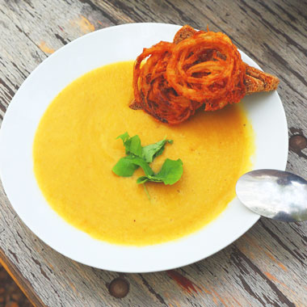

新着レシピ
新着レシピ

季節菜の彩り前菜

簡単カボチャスープ

ヘルシー米粉パン

ぷりぷりエビ料理

様々な食材を使用し作り上げた色とりどりの前菜はテーブルをカラフルに彩ります♪

柔らかく蒸したあとはホイッパーで混ぜるだけの簡単レシピです！かぼちゃは、ビタミンやミネラルが豊富なので美容や冷え性に良いですよ♪

米粉を使ったさっくりとした軽い食感のパンです♪米粉は日本の主食のお米で作られており、ヘルシーで口当たりもいいですよ♪

エビがサラダやスープ、ごはんなどに入っていると、テンションが上がりますよね♪ただ、エビは意外に調理が難しいという声も...。実はあるテクニックを使うだけでエビがプリップリに仕上がっちゃうんです♪